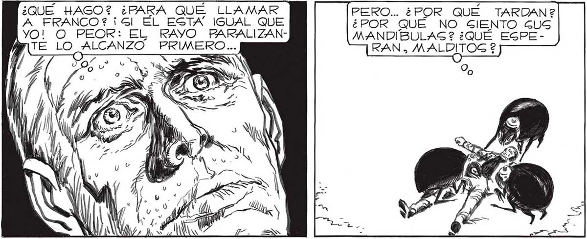

¿QUE HAGO? ¿PARA QUE LLAMAR A FRANCO? ¡Gl EL ESTA IGUAL QUE YO! O PEOR: EL RAYO PARALIZANAN TE En ANA PRIMERO... Sos 4 o o FUNCIONA COMO SIEMPRE ... ¡PERO NO PUEDO MOVER NI UN aatL PERO... ¿POR QUE TARDAN? ¿POR QUÉ NO SIENTO GUS MANDIBULAS ? ¿QUÉ EGPERAN» MALDITOS $ ESTO ES ATROZ.. NO ME HE DESMAYADO, EL CEREBRO ME Y LOS “CASCARUDOS” ME VAN A REMATAR..¡ME HARAN TRIZAS! ¡ SOCORRO! ¡SOCORRO! ¡SOCORRO, RANES YA ENTIENDO... NOS LLEVAN... PRIGIONEROS... YA ES ALGO... AUNQUE ... O 153
